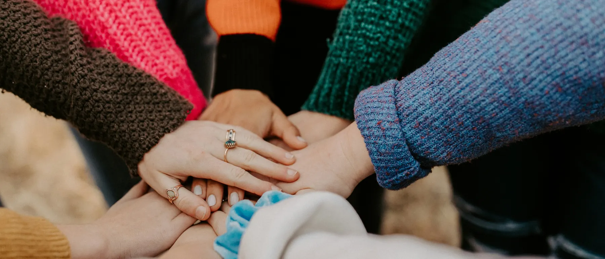

Coordinador de enlace
Recibe las derivaciones de los médicos, presenta la plataforma a cada familia y organiza al equipo. Perfil en trabajo social, psicología o administración en salud.
Estamos al lado de pacientes oncológicos en cuidados paliativos y de las familias que los cuidan. Trabajamos desde adentro de hospitales y clínicas del AMBA, con herramientas prácticas, emocionales y tecnológicas.
S.E.R con vos es una asociación civil sin fines de lucro. Sumamos al hospital lo que el hospital no llega a dar: tiempo, orientación y escucha para la familia.
Trabajamos bajo adscripción institucional en hospitales públicos, clínicas y sanatorios de la Ciudad de Buenos Aires y el conurbano. Empezamos por hospitales generales, donde la oncología compite por recursos con muchos otros servicios.
Orientación en trámites, coberturas, insumos y autorizaciones para reducir demoras y gastos.
Información clara sobre el proceso y los recursos disponibles, sin sobrecargar a nadie.
Contención emocional para el paciente y grupos de descarga para quien cuida.
No somos un efector de salud. La institución anfitriona conserva toda la responsabilidad médica.
Recibe las derivaciones de los médicos, presenta la plataforma a cada familia y organiza al equipo. Perfil en trabajo social, psicología o administración en salud.
Estudiantes avanzados de Psicología, Trabajo Social, Nutrición y Abogacía que cumplen sus horas de práctica mediante convenios con universidades.
Personas, incluso profesionales graduados, que donan su tiempo con un acuerdo formal según la Ley 25.855 y seguro de accidentes personales.
Cuidamos a quienes cuidan. Cada quince días el equipo tiene un espacio de descarga psicológica financiado por la asociación, y nadie acompaña más familias de las que puede sostener.
Tres de cada cuatro personas que respondieron nuestra encuesta (75 %) perciben algún grado de carencia de información, orientación y herramientas para atravesar la enfermedad. El sistema trata el cuerpo; la crisis logística, económica y emocional ocurre en el hogar.
Astenia, dolor crónico y disnea confinan al paciente a la cama y lo alejan de sus roles y vínculos.
Se pierden ingresos y se suman traslados, suplementos y equipamiento que la cobertura no paga.
Falta de sueño, tareas que nadie le enseñó, culpa e impotencia. El cuidador deja de cuidarse.
Estudios y recetas van y vienen entre obras sociales, PAMI, prepagas y hospitales. Los insumos críticos se demoran.
Respuesta múltiple, hasta 3 opciones. Porcentaje de respondentes que eligió cada una.
Las tres necesidades más elegidas (en verde) coinciden con los pilares del programa: Refugio, Expresión y Soporte. Fuente: encuesta "Acompañar también es parte de cuidar", 2026 (n = 104).
Organizar el acompañamiento así nos permite aprovechar mejor los recursos, aliviar el peso del cuidador principal y lograr una gestión eficiente y profundamente humana.
Logística y gestión para que la familia no quede atrapada en la burocracia.
Contención y sentido para el paciente y quienes lo acompañan.
Una plataforma web que funciona en cualquier celular o computadora.
El coordinador explica al servicio de oncología cómo derivar.
El médico cuenta el programa y el coordinador recibe un aviso.
En pocas horas, siempre dentro de la misma jornada.
Se verifica el acuerdo de confidencialidad de los datos.
Definimos quiénes acompañan al paciente en el programa.
La familia accede a la plataforma y a todos los servicios.
Espacios coordinados por profesionales para pacientes, cuidadores y familias. Algunos se hacen en forma presencial y otros de manera virtual, para que nadie quede afuera por la distancia o el cansancio.
Espacios grupales coordinados por profesionales de la salud mental, exclusivos para quien cumple el rol de cuidador principal. Un lugar para expresar lo que rara vez se dice en casa: el agotamiento, la culpa o la anticipación de la pérdida.
InscribirseEstrategias para cuidar la propia salud y así poder cuidar a otros. Trabajamos la autoconciencia, porque el bienestar de quien cuida es parte del tratamiento.
InscribirseUn grupo de personas con experiencias similares, en un entorno de contención. Aprenden a manejar el estrés y la ansiedad con herramientas de la neurociencia y el mindfulness.
InscribirseEl final del tratamiento trae alivio, pero también el temor a que la enfermedad regrese. No promete dejar de tener miedo: propone aprender a vivir con más libertad, presencia y sentido, aun cuando el miedo aparezca.
InscribirseEscucha y contención a cargo de profesionales en psicooncología: el impacto del diagnóstico, la adaptación a los tratamientos, la preparación para una cirugía, los cambios en la imagen corporal y el manejo de las emociones.
InscribirseUna charla abierta por mes sobre nutrición y cáncer, a cargo de una licenciada en nutrición. Pautas prácticas para acompañar los tratamientos, aliviar síntomas y mejorar la calidad de vida.
InscribirsePensado para quienes atraviesan o atravesaron un tratamiento oncológico. Apoyo físico y emocional para reconectar con el cuerpo y la mente en un ambiente tranquilo.
InscribirseLa frialdad de una habitación de hospital aumenta la angustia. Capacitamos a la familia para transformar el entorno del paciente, en casa o internado, con luz cálida, aromas suaves y objetos significativos, y devolverle el control sobre su espacio.
InscribirseUna web app progresiva: se abre desde el navegador, sin descargar nada, y funciona igual en un celular de gama baja que en una computadora. Elegí una herramienta y probala.
Cada mañana, el paciente o su cuidador marca cómo se siente en tres niveles: físico, mental y espiritual. Verde, amarillo o rojo. Nada más.
Si el dolor físico o la angustia mental marcan rojo dos días seguidos, el sistema avisa al coordinador, que se comunica con la familia y notifica a la guardia. La institución gana tiempo para intervenir antes de una urgencia.
En el ejemplo, ayer se registró rojo en el nivel mental. Marcá rojo en mental y registrá el día para ver la alerta.
Una herramienta conversacional que responde solo con información propia y validada por la asociación sobre trámites, autorizaciones y recursos. No busca en internet ni inventa: cada respuesta indica de qué ficha sale.
Una biblioteca disponible a cualquier hora con meditaciones guiadas breves, ejercicios de respiración para momentos de pánico, charlas sobre el duelo y lecturas.
Inhalá mientras el círculo crece, sostené un momento y exhalá lento mientras se achica. Cinco ciclos, un minuto.
En lugar de manuales de papel que nadie lee, videos cortos que enseñan tareas básicas de cuidado en casa y herramientas para el acompañamiento emocional, seleccionados de fuentes de salud. Se ven cuando se puede, las veces que haga falta.
Orientación general. Seguí siempre las indicaciones del equipo de salud del paciente.
Buscamos estudiantes y voluntarios que quieran estar cerca de pacientes y familias. A cambio, cuidamos de vos.

Para los últimos años de Psicología, Trabajo Social, Nutrición, Abogacía y carreras de salud. Cumplís tus horas de práctica con experiencia de campo real, mediante convenio con tu universidad.
Quiero hacer mi prácticaFirmás un acuerdo según la Ley 25.855, con días y horarios definidos. No hay remuneración, pero cubrimos tus viáticos y tenés seguro de accidentes personales.
Quiero ser voluntarioGracias a tu ayuda, pacientes y familias acceden sin costo a talleres, contención y a la plataforma S.E.R. Lo sostienen personas, empresas y subsidios.
Las donaciones de empresas pueden deducirse del Impuesto a las Ganancias, con un tope del 5% de la ganancia neta del ejercicio, y suman una acción concreta a su programa de responsabilidad social.
Hablar con el equipoCada aporte es importante. Con $10.000 por mes ayudás a sostener el acompañamiento de todos nuestros pacientes y sus familias.
Si sos familiar de un paciente, trabajás en una institución de salud o querés sumarte, escribinos.
contacto@serconvos.org.arTrabajamos dentro de hospitales y clínicas de la Ciudad de Buenos Aires y el conurbano bonaerense. Si tu familiar se atiende en una institución adherida, pedile al equipo de oncología la derivación al programa.